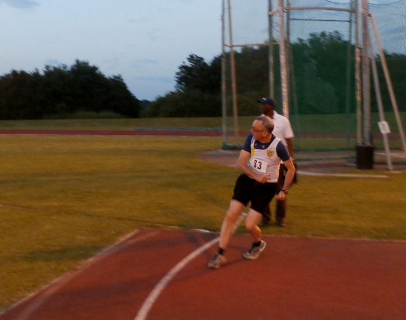

The fourth match of the SCVAC series, on 13 June and again at Bromley, was our most successful so far, in spite of being unable to fill two high jump slots – we finished in third place for the meeting. Overall, we are still in fifth place in the series, but are closing in on Swanley, the next placed club.
Our best results were in the sprints, where we had four 200m competitors, as well as Richard Pitcairn-Knowles running as a guest. Three won outright. Paul English made a welcome return to the track after injury, heading the M35A stream with 25.7 seconds, well clear of other competitors. Martin White, although headed by two younger non-scoring guest athletes, won the M35B stream in 27.3 seconds. In the M60s, Geoffrey Kitchener was over a second and a half clear of the rest of the field, in 29.9 seconds; and Duncan Cochrane came off fourth, after a close battle in the M50s.
In the 1500m M50 race, Geoff Vine secured his best time since 2006, for fifth place in 5 minutes 52.2 seconds, which should be worth a top 12 place in the national rankings (M65). All of our middle distance runners were competing well out of their age brackets: Maurice Marchant (M65) and Richard (M80) bravely took on the M35 A and B groups, securing fifth and fourth places respectively. Richard’s 7 minutes 56.9 seconds should put him well to the top of the UK rankings for his age group.
The shot put competition saw Paul first in the M35s, throwing 8.80 metres and shattering his own club best M40 performance by 34cm. Duncan backed this up with a fourth place in the M50s. Our only high jumper was Geoffrey, first M60 competitor, with 1.20 metres. The final field event was javelin, in which Duncan and Richard took fourth places, in the guise of M35 and M50 competitors, and David Simpson (M70) threw a season’s best 18.60 metres for third place in the M60 competition.
The 4 x 400m relay was the final event of the evening, in which we fielded a team of Martin, Duncan, Geoff and Geoffrey. Although we came home in fourth place, it was a promising run, a fast first lap by Martin having put us into early contention with second position.
I attach results, plus photos of team members in action –
Paul (200m),

Duncan (javelin)
and Richard (1500m).
The next meeting is still some way off, on Monday 7 July at Ashford. It would be helpful, however, if you could let me know by Monday 30 June whether you are thinking of attending, and which events you would particularly like to do – and whether you would be prepared to fill in for others, too.
The programme is as follows (men’s events unless otherwise mentioned):
6.45 hammer, including over 60s, plus pole vault (whilst the women compete at triple jump).
7.05 400m
(7.25 women’s 3000m)
8.00 triple jump (the women compete at the hammer)
8.10 3000m, including over 60s
(8.55 women’s 2k walk).
There is no relay. We are assisting Bromley Vets officiate the triple jump event, so anyone (including injured) able to help out with this (e.g. wielding the rake or holding the tape measure) will be very welcome. If need be, I'll forgo competing to provide some club input.
The venue is the Julie Rose Stadium, Willesborough Road, Kennington, Ashford, TN24 9QX) which can be approached from junctions 9 or 10 of M20, but 10 tends to be better, and is more straightforward. Parking is at the stadium. The nearest station, Ashford, is not at all near. I can offer a lift – please let me know if you want to take advantage of this or can also offer transport.
Geoffrey
(